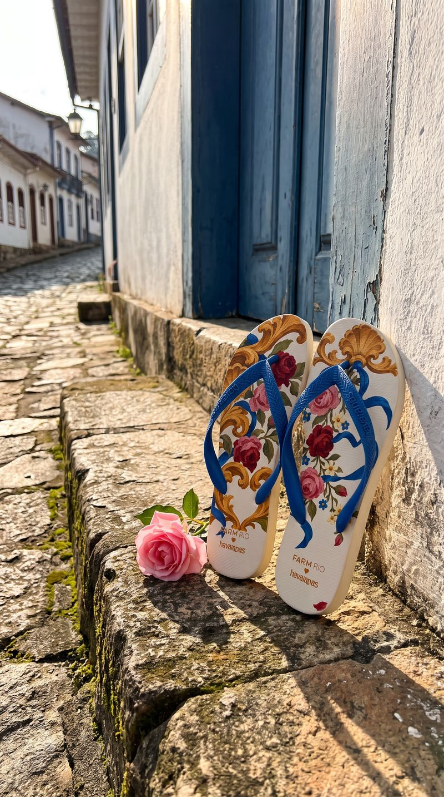
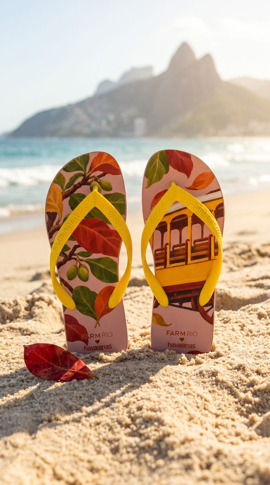
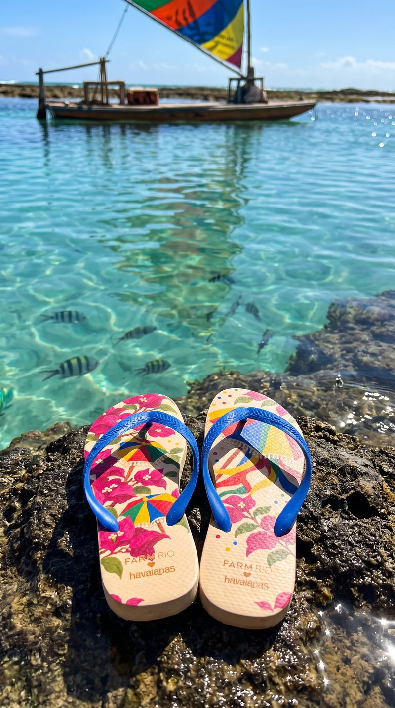
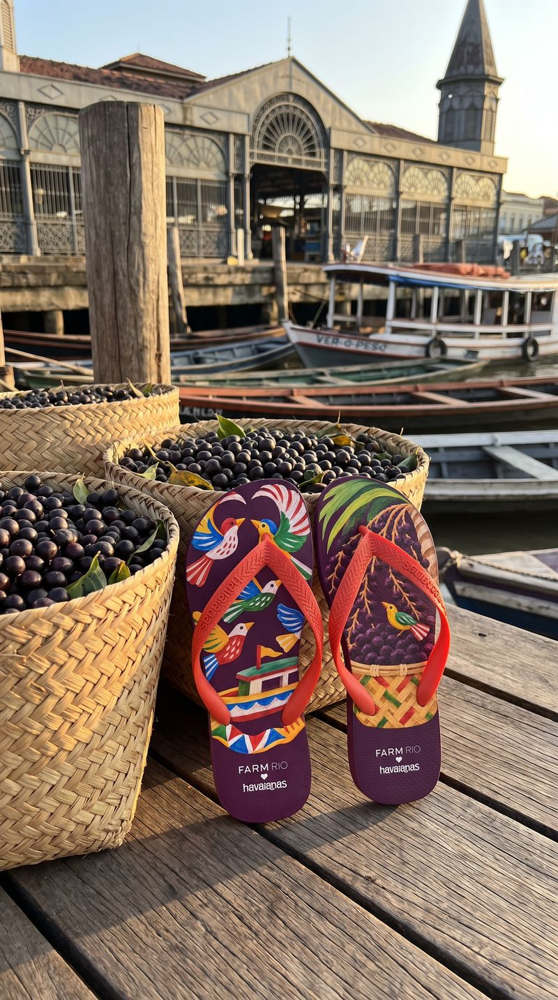
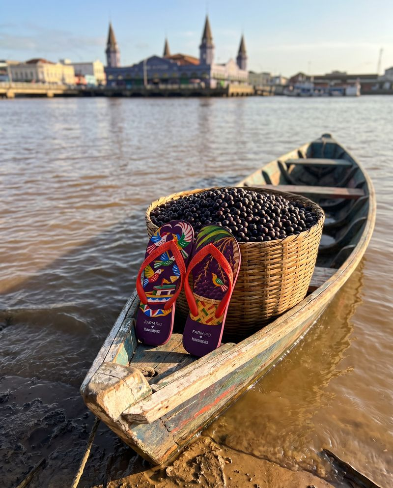
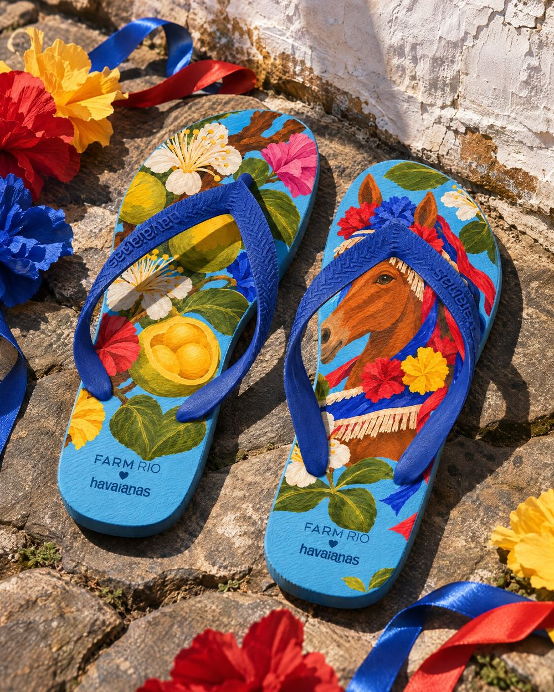
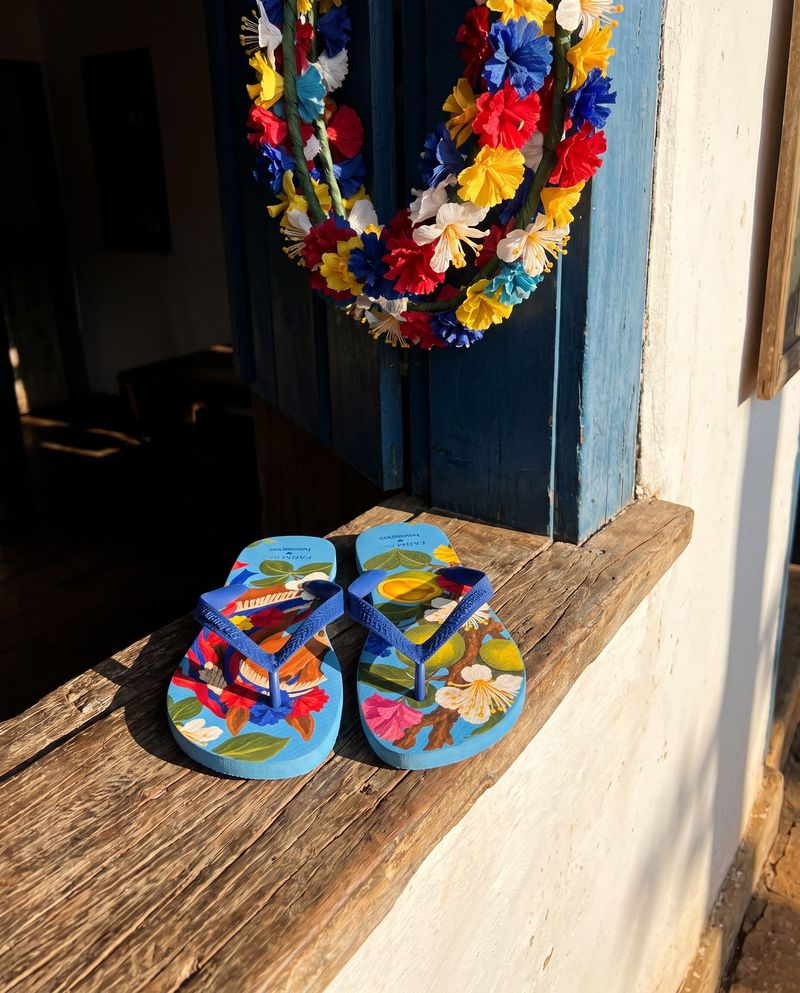
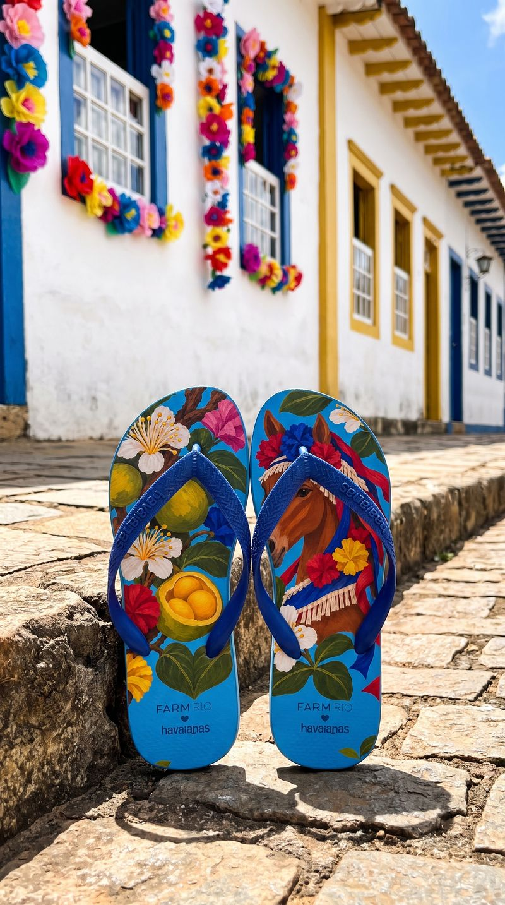
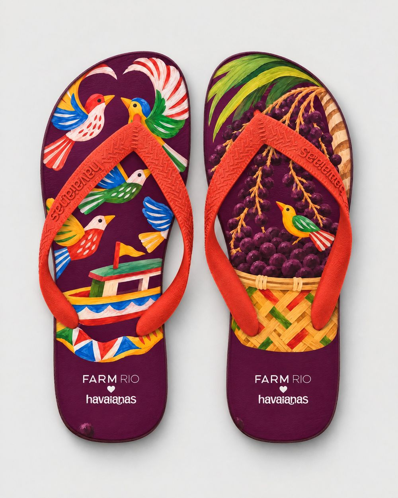
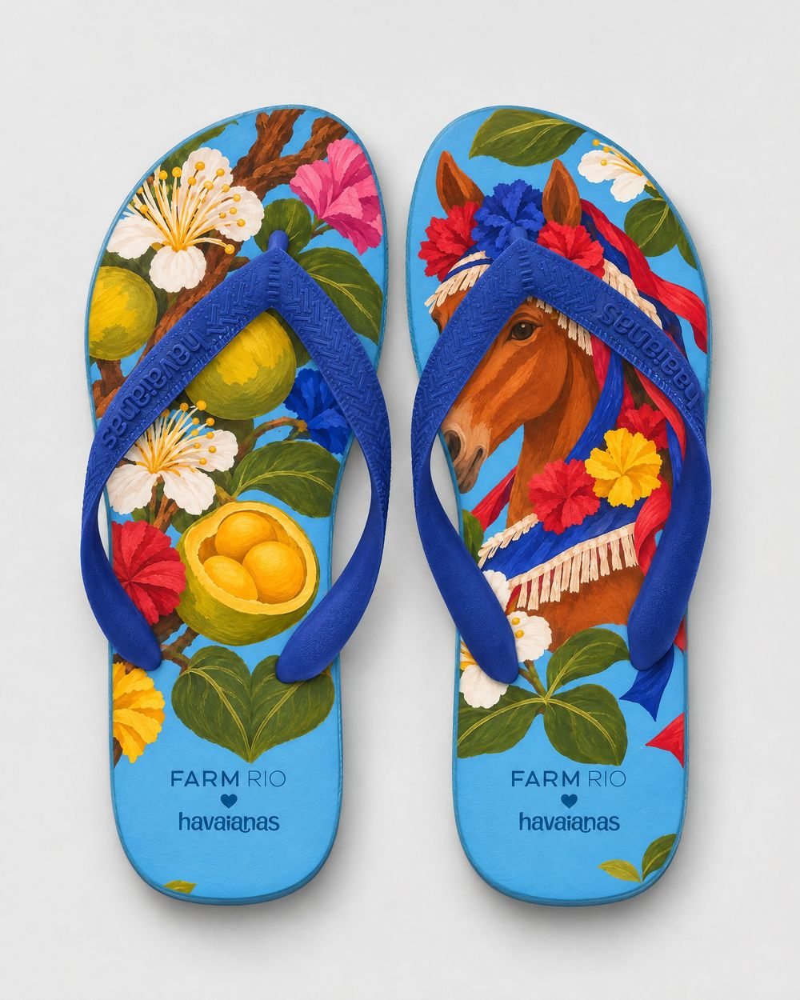

a campanha
O par no lugar
Cada par foi fotografado no lugar da sua arte. Areia só onde o lugar tem praia ou duna; Minas em Ouro Preto, o Pará no Ver-o-Peso, o Rio Grande do Sul no pampa.




















no estúdio
Os quatorze, lado a lado





